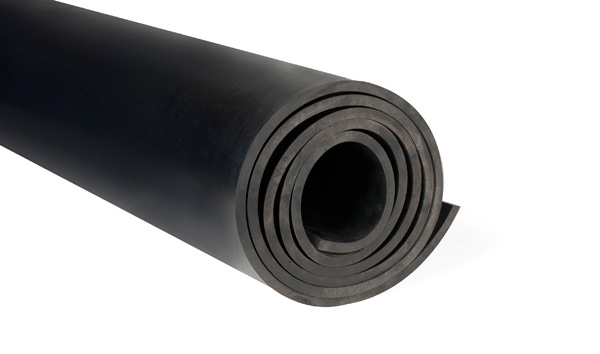

e314 - guajaková guma - potravinářských přídatných látek ... E314: GUMA GUAIACO Guaiac guma je přírodní pryskyřice vyráběná ze stromu druhu Guajacum officinale (viz foto) a také z podobných tropických stromů. Tento produkt je antioxidantem v cola. V současné době nejsou známy žádné negativní vedlejší účinky na koncentrace běžně užívaného guajakového gomu, ale vyskytly se některé případy alergických forem spojených s ...
Mikroporinė guma - Almeida Megzta, 80 mm baltos spalvos elastinė juostelė (guma). add_shopping_cartĮ krepšel ...
Duslintuvo guma (tvirtinimas) | Naujos ir naudotos ... Dekoruota guma petnešėlėms. Spalva balta. Plotis 1,8cm. Kaina už metrą... 0.90€ / m Į krepšelį . Patinka. Palyginti. 1; 2 > >| Rodoma nuo 1 iki 40 iš 74 (2 puslapių) Pristatymas . ne tik ...
Visa tiesa apie gumą - Sileta Guma gali turėti keletą reikšmių, priklausomai nuo to, kaip ji naudojama. Yra kramtomoji guma, gumos arabikos, dantenų diskai, gumos saldainiai, taip pat dvi tos pačios pavadinimo vietos. Kramtomoji guma - tai saldainių tipas, kurį reikia kramtyti, yra pagamintas iš medžio latekso, vadinamo kramtomoji guma, ir yra natūralus produktas.
Siuvimo reikmenys - guma - megzta guma Mes darome pasaulį lankstesniu! Koncentruotas gumos ir plastiko gaminių asortimentas Palankios kainos ir sąlygos pirkti tiek mažmena, tiek didmena Apie mus Mes tikime, kad gera komanda – jau pusė darbo! …kad šiandien būtume geresni nei vakar Mes atsakingai žiūrime tiek į parduodamų prekių, tiek ir į aptarnavimo kokybę. Daugiau 1 Metų profesionalios patirties 1 % […]
SBR lakštinė guma ~ AGOMA Mikroporinė guma (kitaip dar vadinama porėta ar akyta guma) gaminama iš EPDM gumos ir pasižymi nedideliu svoriu. Mikroporinė guma atspari atmosferos poveikiui (orui, UV spinduliams), ugniai. Mikroporinėje gumoje esančios mikroporos yra uždaros struktūros, todėl nepraleidžia oro ir negeria vandens. Mikroporinė guma naudojama termoizoliacijai, tarpinių ir kitų sandariklių gamyboje ...
SEL - GUMA guma statusas T sritis fizika atitikmenys: angl. rubber vok. Gummi, m rus. резина, f pranc. caoutchouc, m; gomme, f Fizikos terminų žodynas : lietuvių ...
Guma | Elastinė guma | Guma siuvimui - Darau.lt guma statusas T sritis ekologija ir aplinkotyra apibrėžtis Sintetinio arba natūraliojo kaučiuko vulkanizacijos produktas.atitikmenys: angl. gum; processed rubber; rubber; vulcanized rubber vok. Gumme, f rus. резина, frus. резина, f
Kramtomoji guma - įsigykite internetu arba mūsų ... Plasti Dip’as kitaip dar vadinamas „skysta guma“, todėl jis puikiai izoliuos nuo drėgmės sodo baldus, tvoras ir kitus įrenginius. Taip pat jis neblunka saulėje, todėl daiktai ilgai išlaikys naują žvilgesį.
Kategorija nerasta!
2020.10.29 11:24

Apmokėjimas Pristatymas Grąžinimas Patinka Kontaktai Prisijungti Registracija Nemokamas pristatymas Nuo 35 eur Pristatymas ne tik Lietuvoje Iki nemokamo siuntimo liko: 35 € Lojalumo taškai už šį užsakymą: 0.00 € Užsakymo suma: 0.00€